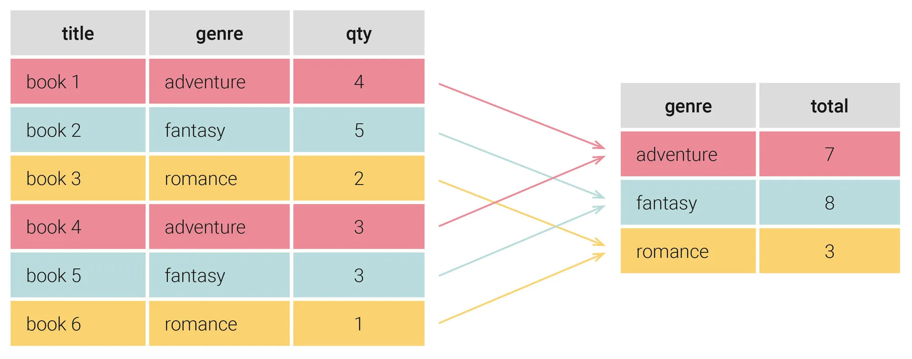
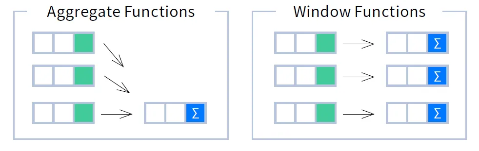
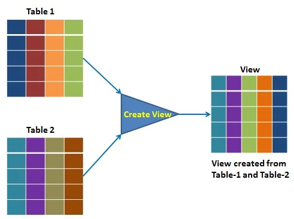

📊 SQL (DML). Consultas Avanzadas¶
Información de la unidad
Realización de consultas:
- Consultas de resumen.
- Agrupamiento de registros.
- Funciones ventana.
- Subconsultas.
- Optimización de consultas.
Bases de datos relacionales:
- Vistas.
Una vez conocido el modelo relacional, en esta unidad vamos a comenzar a trabajar el RA3 "Consulta la información almacenada en una base de datos empleando asistentes, herramientas gráficas y el lenguaje de manipulación de datos.",
Criterios de evaluación
- CE3a: Se han identificado las herramientas y sentencias para realizar consultas.
- CE3b: Se han realizado consultas simples sobre una tabla.
- CE3c: Se han realizado consultas sobre el contenido de varias tablas mediante composiciones internas.
- CE3d: Se han realizado consultas sobre el contenido de varias tablas mediante composiciones externas.definición y control de datos.
- CE3e: Se han realizado consultas resumen.
- CE2f: Se han creado vistas.
Bases de datos recursos
Aquí tienes los enlaces a las bases de datos de recursos para esta unidad:
En este tema abordaremos 2 grandes bloques:
- Consultas agregadas o resumen
- Subconsultas y optimización
📈 1.1 Consultas agregadas o resumen¶
Vamos a recordar la sintaxis para realizar una consulta con la sentencia SELECT en MySQL:
SELECT [DISTINCT] select_expr [, select_expr ...]
[FROM table_references]
[WHERE where_condition]
[GROUP BY {col_name | expr | position} [ASC | DESC], ... [WITH ROLLUP]]
[HAVING where_condition]
[ORDER BY {col_name | expr | position} [ASC | DESC], ...]
[LIMIT {[offset,] row_COUNT | row_COUNT OFFSET offset}]
Es muy importante conocer en qué orden se ejecuta cada una de las cláusulas que forman la sentencia SELECT. El orden de ejecución es el siguiente:
- Cláusula
FROM. - Cláusula
WHERE(Es opcional, puede ser que no aparezca). - Cláusula
GROUP BY(Es opcional, puede ser que no aparezca). - Cláusula
HAVING(Es opcional, puede ser que no aparezca). - Cláusula
SELECT. - Cláusula
ORDER BY(Es opcional, puede ser que no aparezca). - Cláusula
LIMIT(Es opcional, puede ser que no aparezca).
En esta unidad vamos a trabajar con dos nuevas cláusulas GROUP BY y HAVING.
Funciones de agregación¶
Estas funciones realizan una operación específica sobre todas las filas de un grupo.
Las funciones de agregación más comunes son:
| Función | Descripción |
|---|---|
MAX(expr) |
Valor máximo del grupo |
MIN(expr) |
Valor mínimo del grupo |
AVG(expr) |
Valor medio del grupo |
SUM(expr) |
Suma de todos los valores del grupo |
COUNT(*) |
Número de filas que tiene el resultado de la consulta |
COUNT(columna) |
Número de valores no nulos que hay en esa columna |
En la documentación oficial de MySQL puede encontrar una lista completa de todas las funciones de agregación que se pueden usar.
Importante: Las funciones de agregación sólo se pueden usar en las cláusulas
SELECTYHAVING.
Diferencia entre COUNT(*) y COUNT(columna)¶
COUNT(*): Calcula el número de filas que tiene el resultado de la consulta.COUNT(columna): Cuenta el número de valores no nulos que hay en esa columna.
Importante: Tenga en cuenta la diferencia que existe entre las funciones COUNT(*) y COUNT(columna), ya que devolverán resultados diferentes cuando haya valores nulos en la columna que estamos usando en la función.
Ejemplos:
Supongamos que tenemos los siguientes valores en la tabla alumno:
| id | nombre | apellido1 | apellido2 | fecha_nacimiento | es_repetidor | teléfono |
|---|---|---|---|---|---|---|
| 1 | María | Sánchez | Pérez | 1990/12/01 | no | NULL |
| 2 | Juan | Sáez | Vega | 1998/04/02 | no | 618253876 |
| 3 | Pepe | Ramírez | Gea | 1988/01/03 | no | NULL |
| 4 | Lucía | López | Ruiz | 1993/06/13 | sí | 678516294 |
La consulta:
devolverá:
| COUNT(teléfono) |
|---|
| 2 |
mientras que la consulta:
| COUNT(*) |
|---|
| 4 |
Contar valores distintos¶
Supongamos que tenemos los siguientes valores en la tabla producto:
| id | nombre | precio | código_fabricante |
|---|---|---|---|
| 1 | Disco duro SATA3 1TB | 86 | 5 |
| 2 | Memoria RAM DDR4 8GB | 120 | 4 |
| 3 | Disco SSD 1 TB | 150 | 5 |
| 4 | GeForce GTX 1050Ti | 185 | 5 |
Y nos piden calcular el número de valores distintos de código de fabricante que aparecen en la tabla producto.
Esta consulta devolverá:
| COUNT(DISTINCT código_fabricante) |
|---|
| 2 |
La cláusula GROUP BY¶
La cláusula GROUP BY se utiliza para agrupar filas que tienen valores iguales en una o más columnas. Esto permite aplicar funciones de agregación como SUM, COUNT, AVG, etc., a cada grupo, es decir, permite realizar cálculos en vertical, sobre el resultado de agrupar registros.
{kind=link}

Los pasos que vamos a realizar son:
select: Indicar las columnas a agrupar.select: Indicar los cálculos mediante funciones agregadas (count,sum,max,min,avg, ...)GROUP BY: indicar las agrupaciones (deben coincidir al menos con las columnas a mostrar)
Para demostrar su uso, nos vamos a centrar en los pagos realizados por los clientes. Veamos los datos que tenemos en la tabla payment:
| customer_id | amount | payment_date |
|---|---|---|
| 1 | 2.99 | 2005-05-25 11:30:37 |
| 1 | 0.99 | 2005-05-28 10:35:23 |
| 1 | 5.99 | 2005-06-15 00:54:12 |
| 2 | 0.99 | 2005-06-15 18:02:53 |
| 2 | 9.99 | 2005-06-15 21:08:46 |
| 3 | 4.99 | 2005-06-15 19:20:11 |
Podemos observar que un mismo cliente puede tener varios pagos. ¿Y si queremos saber el total que ha gastado cada cliente? Para ello, necesitamos agrupar por el ID del cliente y sumar sus pagos. En la parte de select indicamos los datos a mostrar, y en group by las columnas por las que debe agrupar:
| customer_id | SUM(amount) |
|---|---|
| 1 | 118.68 |
| 2 | 128.73 |
| 3 | 135.74 |
Es decir, el valor de 118.68 del cliente 1 se obtiene de sumar todas las filas de la tabla de pagos de dicho cliente. Dicho de otro modo, al realizar una agrupación, juntamos las filas que tienen el mismo valor en la columna agrupada, y realiza el cálculo indicado con dichas filas.
¿Y si quiero obtener el nombre del cliente en vez de su código? Podemos pensar que, si hago un join y muestro su nombre y el pago, obtendré la misma información:
SELECT c.first_name, c.last_name, p.amount
FROM payment p
JOIN customer c ON p.customer_id = c.customer_id
LIMIT 4;
| first_name | last_name | amount |
|---|---|---|
| MARY | SMITH | 2.99 |
| MARY | SMITH | 0.99 |
| MARY | SMITH | 5.99 |
| PATRICIA | JOHNSON | 0.99 |
Pero no. Obtengo el resultado de realizar la combinación de las dos tablas, no el cálculo agregado. Así pues, necesito agrupar el resultado del join:
SELECT c.first_name, c.last_name, SUM(p.amount)
FROM payment p
JOIN customer c ON p.customer_id = c.customer_id
GROUP BY c.customer_id
LIMIT 3;
| first_name | last_name | SUM(p.amount) |
|---|---|---|
| MARY | SMITH | 118.68 |
| PATRICIA | JOHNSON | 128.73 |
| LINDA | WILLIAMS | 135.74 |
Agrupaciones con combinaciones externas¶
Imagina que queremos calcular cuántos alquileres tiene cada cliente:
SELECT c.first_name, c.last_name, COUNT(r.rental_id)
FROM customer c
INNER JOIN rental r ON c.customer_id = r.customer_id
GROUP BY c.customer_id
LIMIT 3;
| first_name | last_name | COUNT(r.rental_id) |
|---|---|---|
| MARY | SMITH | 32 |
| PATRICIA | JOHNSON | 28 |
| LINDA | WILLIAMS | 26 |
Al realizar una agrupación, juntamos las filas que tienen el mismo valor en la columna agrupada, y realiza el cálculo indicado con dichas filas. Sin embargo, si usamos un inner join, sólo aparecen los clientes que tienen alquileres. Si nos interesa que aparezcan todos los clientes, y si no tienen alquileres que salga 0, necesitamos hacer un left join:
SELECT c.first_name, c.last_name, COUNT(r.rental_id)
FROM customer c
LEFT JOIN rental r ON c.customer_id = r.customer_id
GROUP BY c.customer_id
LIMIT 3;
| first_name | last_name | COUNT(r.rental_id) |
|---|---|---|
| MARY | SMITH | 32 |
| PATRICIA | JOHNSON | 28 |
| LINDA | WILLIAMS | 26 |
Agrupaciones compuestas¶
También es posible agrupar por más de una columna. Por ejemplo, podemos obtener la recaudación po tienda y empleado. Para ello, combinamos las tablas y agrupamos por el criterio deseado:
SELECT s.store_id, st.first_name, st.last_name, SUM(p.amount)
FROM payment p
JOIN staff st ON p.staff_id = st.staff_id
JOIN store s ON st.store_id = s.store_id
GROUP BY s.store_id, st.staff_id;
| store_id | first_name | last_name | SUM(p.amount) |
|---|---|---|---|
| 1 | Mike | Hillyer | 33489.47 |
| 2 | Jon | Stephens | 33927.04 |
SELECT N - GROUP BY¶
Es importante destacar que al menos la cantidad y datos que utilizamos en la proyección (SELECT) que agrupan, también hemos de utilizarlos dentro del GROUP BY. Dicho de otro modo, si en el SELECT ponemos tres columnas y dos cálculos, en el GROUP BY deberemos poner las tres mismas columnas.
Es decir, no debemos hacer esto (dos en SELECT, uno en GROUP BY), ya que no estaría mostrando la información que queremos. Si repetimos el ejemplo anterior, obtenemos un resultado en MariaDB , pero lo que obtenemos no es correcto (en PosgreSQL directamente obtendremos un error):
SELECT s.store_id, st.first_name, st.last_name, SUM(p.amount)
FROM payment p
JOIN staff st ON p.staff_id = st.staff_id
JOIN store s ON st.store_id = s.store_id
GROUP BY s.store_id;
| store_id | first_name | last_name | SUM(p.amount) |
|---|---|---|---|
| 1 | Mike | Hillyer | 67416.51 |
En cambio, sí que es correcto agrupar por más columnas de las que mostramos (aunque su uso es cuestionable):
SELECT s.store_id, SUM(p.amount)
FROM payment p
JOIN staff st ON p.staff_id = st.staff_id
JOIN store s ON st.store_id = s.store_id
GROUP BY s.store_id, st.staff_id;
| store_id | SUM(p.amount) |
|---|---|
| 1 | 33489.47 |
| 2 | 33927.04 |
ROLLUP (Resúmenes de totales)¶
Cuando hacemos una consulta con una agregación, podemos emplear la cláusula SELECT ... WITH ROLLUP para que añada filas extras con totales de la agregación.
Si recuperamos la consulta que obtenía la recaudación por cliente, pero le añadimos WITH ROLLUP podemos observar cómo añade al resultado una nueva fila con el gran total:
| customer_id | SUM(amount) |
|---|---|
| 1 | 118.68 |
| 2 | 128.73 |
| 3 | 135.74 |
| NULL | 67416.51 |
En el caso de que la consulta agrupe por más de un valor, mostrará los diferentes subtotales:
SELECT s.store_id, st.staff_id, SUM(p.amount)
FROM payment p
JOIN staff st ON p.staff_id = st.staff_id
JOIN store s ON st.store_id = s.store_id
GROUP BY s.store_id, st.staff_id WITH ROLLUP;
| store_id | staff_id | SUM(p.amount) |
|---|---|---|
| 1 | 1 | 33489.47 |
| 1 | NULL | 33489.47 |
| 2 | 2 | 33927.04 |
| 2 | NULL | 33927.04 |
| NULL | NULL | 67416.51 |
PostgreSQL
En el caso de PostgreSQL cabe destacar que no tiene soporte para WITH ROLLUP. En cambio, dispone de otras funciones similares como GROUPING SETS, CUBE y ROLLUP.
🔍 Filtrando grupos con HAVING
La cláusula HAVING permite filtrar tras realizar los cálculos de agrupación. Sería similar al WHERE pero una vez realizados los datos agregados.
El orden de ejecución de las cláusulas dentro de una consulta es:
WHEREque filtra las filas según las condiciones que pongamos.GROUP BYque crea una tabla agregada a partir de las columnas que agrupa.HAVINGfiltra los grupos.ORDER BYque ordena o clasifica la salida.
Para estos ejemplos, nos vamos a centrar en los clientes que han gastado mucho dinero. Para ello, agrupamos por el ID del cliente y sumamos sus pagos:
| customer_id | total |
|---|---|
| 1 | 118.68 |
| 2 | 128.73 |
| 3 | 135.74 |
Si de este resultado quiero filtrar aquellos que han gastado más de 180, necesito hacerlo mediante la cláusula HAVING:
| customer_id | total |
|---|---|
| 144 | 189.73 |
| 148 | 211.55 |
| 526 | 208.58 |
Por supuesto, también podemos incluir un filtrado previo a la ejecución. Por ejemplo, para obtener el total gastado por cliente, pero contando solo los pagos individuales superiores a 10, y que el total final sea superior a 50:
SELECT customer_id, SUM(amount) AS total
FROM payment
WHERE amount > 10
GROUP BY customer_id
HAVING total > 50;
| customer_id | total |
|---|---|
| 211 | 54.91 |
| 526 | 54.91 |
Recuerda que WHERE filtra las filas antes de aplicar la agrupación, mientras que HAVING filtra los grupos después de que se han calculado las funciones de agregación.
⚙️ Orden de ejecución de las cláusulas¶
En este punto que ya hemos visto la mayoría de las cláusulas dentro de una consulta SQL, es conveniente tener claro su orden de ejecución.
Las etapas de ejecución de una consulta son:
FROMyJOIN: selección de tablas y su combinación, tanto internas como externasWHERE: filtrado de los datosGROUP BY: agrupación/agregaciónHAVING: filtrado de la agrupaciónSELECTyDISTINCT: proyección de los camposORDER BY: ordenación del resultadoLIMIT: filtrado del resultado
A modo de ejemplo tendríamos:
SELECT DISTINCT c.NomCen -- 5.1 y 5.2
FROM departamento d -- 1.1
JOIN centro c ON d.CodCen = c.CodCen -- 1.2
WHERE d.PreAnu > 20000000 -- 2
GROUP BY c.NomCen -- 3
HAVING SUM(d.PreAnu) > 100000000 -- 4
ORDER BY c.CodCen -- 6
LIMIT 1 OFFSET 2 -- 7
❌ Errores comunes y buenas prácticas¶
De forma general, los errores más comunes a la hora de realizar consultas son:
-
No usar
WHEREen las modificaciones o eliminaciones. ¡No te olvide de poner elWHEREen elDELETE FROM! -
Confundir la comparación de valores nulos, utilizando la asignación en vez del operador
IS NULL: -
No comprobar la existencia de uno o más valores en las subconsultas. Si la subconsulta devuelve un único registro, podemos usar
=. Si no, deberemos utilizarIN:-- Incorrecto si la subconsulta retorna más de una fila SELECT * FROM departamento WHERE PreAnu = (SELECT MAX(PreAnu) FROM departamento); -- Mejor, ya que podemos tener dos departamentos con el mismo presupuesto máximo SELECT * FROM departamento WHERE PreAnu IN (SELECT MAX(PreAnu) FROM departamento); -
Utilizar
HAVINGpara filtrar filas en lugar deWHERE: La cláusulaHAVINGse ejecuta después deGROUP BYy está pensada para filtrar datos agregados. Si estás filtrando datos no agregados, pertenece a la cláusulaWHERE. Conocer la diferencia en el orden de ejecución entre WHERE y HAVING te ayuda a determinar dónde debe colocarse cada condición.Si quiero obtener los departamentos que tiene más de 5 empleados:
-
Uso incorrecto de agregaciones en
SELECTsinGROUP BY: Puesto queGROUP BYse ejecuta antes queHAVINGoSELECT, si no agrupas tus datos antes de aplicar una función de agregado, se producirán resultados incorrectos o errores. Comprender el orden de ejecución aclara por qué estas dos cláusulas deben ir juntas.
🪟 1.2 Funciones ventana¶
Desde SQL:2003 podemos emplear las funciones ventana, las cuales son similares a las consultas group by en cuanto que permiten ejecutar funciones agregadas en varias filas. La diferencia es que permiten funciones de agregación incorporadas sin necesidad de agrupar cada campo en una sola fila, es decir, permiten realizar cálculos en horizontal.
{kind=link}

Funciones ventana de forma sencilla
Imagina que estás en un autobús escolar.
- GROUP BY (El Resumen): Es como si el profesor gritara: "¡Que levanten la mano los de 1º de ESO!". Él solo cuenta cuántos hay y apunta un número en su libreta. Al final, solo tiene un resumen (1º ESO -> 20 alumnos), pero ha perdido de vista quién es cada alumno.
- WINDOW FUNCTIONS (La Ventana): Es como si cada alumno tuviera una ventanita mágica al lado de su asiento. El alumno sigue sentado en su sitio (no perdemos su identidad), pero en su ventana puede ver información de su grupo. Por ejemplo, cada alumno de 1º de ESO puede mirar su ventana y ver: "En mi clase somos 20 y yo soy el número 3 de la lista".
La clave: La función ventana no "machaca" las filas. Agrega información manteniendo el detalle de cada registro.
Para usar una función ventana, siempre seguimos esta estructura:
FUNCION() OVER (PARTITION BY columna1 ORDER BY columna2)
OVER: Es la palabra clave que le dice a SQL: "Ojo, esto no es un agregado normal, es una ventana".PARTITION BY: Es el "grupo" (como la clase del autobús). Si no lo pones, la ventana es toda la tabla.ORDER BY: Es el orden dentro de ese grupo (quién va primero en la lista).
Sintaxis y Estructura¶
Para transformar una función normal en una función ventana, añadimos la cláusula OVER:
FUNCION_O_AGREGADO(...) OVER (
[PARTITION BY columnas_para_agrupar]
[ORDER BY columnas_para_ordenar]
)
PARTITION BY: Define la "ventana" o grupo. Es similar alGROUP BY, pero solo para el cálculo de esa columna. El contador o acumulador se reinicia cuando cambia este valor.ORDER BY: Define el orden dentro de la ventana. Es crucial para rankings o sumas acumuladas.
🔄 Interacción entre GROUP BY y Funciones Ventana¶
Una de las dudas más comunes es: ¿Puedo usar GROUP BY y Funciones Ventana en la misma consulta?
SÍ. Pero es vital entender el orden de ejecución.
El motor de base de datos ejecuta las cláusulas en este orden:
1. FROM / JOIN
2. WHERE
3. GROUP BY (Aquí se comprimen las filas)
4. HAVING
5. WINDOW FUNCTIONS (Se calculan sobre las filas resultantes del agrupamiento)
6. SELECT
7. ORDER BY
Esto significa que la función ventana actúa sobre el resultado del agrupamiento.
Caso 1: Funciones Ventana SIN GROUP BY (Datos en crudo)
Aquí trabajamos sobre las filas originales. Podemos mezclar columnas normales con cálculos de ventana.
Ejemplo: Listar cada película, su duración y la duración media de su categoría.
SELECT title, length, category_id,
AVG(length) OVER (PARTITION BY category_id) as media_categoria
FROM film f
JOIN film_category fc USING(film_id);
GROUP BY porque queremos ver cada película individualmente.
Caso 2: Funciones Ventana CON GROUP BY (Datos Agrupados)
Aquí primero agrupamos los datos y luego aplicamos una función ventana (como un Ranking) sobre esos grupos resultantes.
Ejemplo: Queremos un Ranking de las categorías con más películas. Primero contamos películas por categoría (GROUP BY) y luego asignamos el ranking (RANK OVER).
SELECT category_id,
COUNT(*) as total_peliculas, -- Agregación normal (colapsa filas)
RANK() OVER (ORDER BY COUNT(*) DESC) as ranking -- Ventana sobre el agrupado
FROM film_category
GROUP BY category_id; -- Obligatorio para usar COUNT(*)
| category_id | total_peliculas | ranking |
|---|---|---|
| 15 | 74 | 1 |
| 9 | 73 | 2 |
| 8 | 68 | 3 |
Observa: Dentro del
OVER (ORDER BY ...)hemos puestoCOUNT(*). Esto es porque la función ventana necesita saber cómo ordenar los grupos ya creados.
🧮 Tipos de Funciones Ventana¶
Podemos clasificar las funciones que usamos con OVER en tres tipos. Es importante notar que las funciones de agregación clásicas (SUM, AVG) pueden comportarse como funciones ventana.
1. Funciones de Agregación como Ventana (SUM, AVG, COUNT, MAX...)¶
Si usas SUM(x) sin OVER, necesitas GROUP BY. Si usas SUM(x) OVER(...), es una función ventana.
- Sin
ORDER BYdentro del OVER: Calcula el total del grupo y lo repite en cada fila. - Con
ORDER BYdentro del OVER: Calcula un acumulado (Running Total).
Ejemplo: Suma acumulada de pagos por fecha.
SELECT payment_date, amount,
SUM(amount) OVER (ORDER BY payment_date) as total_acumulado
FROM payment
LIMIT 5;
| payment_date | amount | total_acumulado |
|---|---|---|
| 2005-05-24... | 2.99 | 2.99 |
| 2005-05-24... | 0.99 | 3.98 (2.99 + 0.99) |
| 2005-05-24... | 5.99 | 9.97 (3.98 + 5.99) |
2. Funciones de Ranking (ROW_NUMBER, RANK, DENSE_RANK)¶
Estas funciones solo existen como funciones ventana. Sirven para enumerar filas.
ROW_NUMBER(): Numera 1, 2, 3, 4... (Sin empates).RANK(): Numera 1, 2, 2, 4... (Con empates y saltos).DENSE_RANK(): Numera 1, 2, 2, 3... (Con empates pero sin saltos).
Ejemplo: Ranking de clientes por gastos (usando GROUP BY y Ventana a la vez).
SELECT customer_id,
SUM(amount) as total_gastado,
RANK() OVER (ORDER BY SUM(amount) DESC) as posicion_ranking
FROM payment
GROUP BY customer_id
LIMIT 3;
3. Funciones de Valor (LAG, LEAD)¶
Permiten acceder a datos de una fila anterior (LAG) o posterior (LEAD) sin hacer subconsultas complejas.
Ejemplo: Comparar lo que pagó un cliente hoy vs lo que pagó la vez anterior.
SELECT customer_id, payment_date, amount,
LAG(amount) OVER (PARTITION BY customer_id ORDER BY payment_date) as pago_anterior,
amount - LAG(amount) OVER (PARTITION BY customer_id ORDER BY payment_date) as diferencia
FROM payment
ORDER BY customer_id, payment_date;
🧪 Resumen: ¿Qué puedo mezclar en el SELECT?¶
A menudo surge la duda al construir el SELECT: ¿Qué columnas puedo poner?
| Escenario | Cláusulas | ¿Qué va en el SELECT? |
|---|---|---|
| Agregación Simple | GROUP BY A |
Solo columna A y funciones agregadas como SUM(B), COUNT(*). No puedes poner C si no agrupas por ella. |
| Ventana Simple | OVER(...) (Sin Group By) |
Cualquier columna de la tabla (A, B, C) y cualquier función ventana SUM(B) OVER(...). Mantiene todas las filas. |
| Híbrido | GROUP BY A + OVER(...) |
Solo columna A, agregaciones SUM(B) y funciones ventana aplicadas sobre las agregaciones RANK() OVER (ORDER BY SUM(B)). |
Error Común
-- ESTO FALLARÁ
SELECT customer_id,
amount, -- Error: 'amount' no está en GROUP BY y no tiene función agregada
RANK() OVER (ORDER BY amount)
FROM payment
GROUP BY customer_id;
GROUP BY (si quieres ver cada pago), o aplicas SUM(amount) si quieres agrupar por cliente.
🎓 ¿Quieres saber más?
Las funciones ventana son un aspecto avanzado. Si quieres profundizar, te recomiendo:
🖼️ 1.3 Vistas¶
Si retomamos la arquitectura de tres niveles que estudiamos en la primera unidad, un esquema externo, que es a lo que accede el usuario final, se compone de un conjunto de tablas y vistas que luego se transforman en formularios e informes.
Una vista es un objeto que se define con una consulta y que se comporta como una tabla virtual. Cuando un usuario accede a una vista, no percibe si los datos están físicamente en una tabla o son el resultado de una consulta dinámica.
{kind=link}

Creación de una vista
Para crear una vista, usaremos la sentencia CREATE [OR REPLACE] VIEW nombre AS SELECT....
Por ejemplo, vamos a crear una vista llamada premium_films que solo contenga las películas cuyo precio de alquiler sea superior a 4.00:
CREATE VIEW premium_films AS
SELECT film_id, title, rental_rate, replacement_cost
FROM film
WHERE rental_rate > 4.00;
Una vez creada, podemos realizar consultas directamente sobre ella como si fuera una tabla normal:
| film_id | title | rental_rate | replacement_cost |
|---|---|---|---|
| 2 | ACE GOLDFINGER | 4.99 | 12.99 |
| 7 | AIRPLANE SIERRA | 4.99 | 28.99 |
| 8 | ALADDIN CALENDAR | 4.99 | 24.99 |
Naturaleza dinámica
Las vistas son dinámicas, lo que significa que reflejan automáticamente cualquier cambio en la tabla original. Si insertamos una nueva película en film que cumpla la condición del WHERE, aparecerá inmediatamente en nuestra vista:
INSERT INTO film (title, language_id, rental_rate, replacement_cost)
VALUES ('ZODIAC SQL', 1, 4.99, 29.99);
SELECT *
FROM premium_films
WHERE title = 'ZODIAC SQL';
| film_id | title | rental_rate | replacement_cost |
|---|---|---|---|
| 1001 | ZODIAC SQL | 4.99 | 29.99 |
Inserción y modificación mediante vistas
En muchos casos, es posible utilizar una vista para insertar o modificar datos, lo que repercutirá directamente en la tabla base:
Autoevaluación
Podemos combinar vistas con otras tablas. ¿Qué información crees que obtendremos con la siguiente consulta?
Restricciones
A la hora de modificar datos a través de una vista, existen ciertas limitaciones:
- No se puede modificar el contenido si la vista utiliza
GROUP BY,DISTINCT,HAVING,UNIONo funciones de agregación. - La vista debe incluir todos los campos obligatorios (
NOT NULL) de la tabla base que no tengan un valor por defecto. - No se pueden modificar campos que sean cálculos o expresiones derivadas.
Gestión de vistas
Para borrar una vista, utilizaremos la sentencia DROP VIEW nombre:
Para ver qué vistas tenemos creadas en nuestra base de datos, podemos consultar los metadatos en information_schema.VIEWS:
Vistas materializadas
Aunque MariaDB no las soporte de forma nativa (aunque existen plugins), otros SGBD como PostgreSQL u Oracle permiten crear Vistas Materializadas.
A diferencia de las normales, estas persisten los datos en disco, lo que mejora drásticamente el rendimiento en consultas complejas, a costa de tener que "refrescarlas" cuando los datos cambian.
Ejemplo en PostgreSQL:
Referencias¶
-
Sintaxis SQL oficial de PostgreSQL y MariaDB.
-
Cheatsheets de https://learnsql.com/ sobre:
Aquí tienes la continuación del tema, desarrollada con mayor profundidad, más ejemplos y un enfoque especial en las CTEs como solicitaste. He mantenido el formato estético y pedagógico del archivo original.
📦 2. Subconsultas¶
Hasta ahora, nuestras consultas se basaban en unir tablas (JOIN) o filtrar datos directamente. Pero, ¿qué ocurre cuando la condición para filtrar un dato depende de un cálculo previo que desconocemos?
Una subconsulta (o consulta anidada) es una sentencia SELECT que se incrusta dentro de otra consulta principal. Actúa como un proveedor de datos dinámico: primero se resuelve la pregunta pequeña (subconsulta) para poder contestar a la pregunta grande (consulta externa).
Analogía: Las Muñecas Matryoshka
Imagina que quieres saber: "¿Qué alumnos son más altos que el promedio de la clase?".
No puedes responder a eso directamente porque no sabes cuál es el promedio.
- Subconsulta (La muñeca pequeña): Calculas la altura promedio (ej. 1.70m).
- Consulta Externa (La muñeca grande): Ahora sí, filtras: "Dime los alumnos que miden más de 1.70m".
La sintaxis siempre requiere paréntesis:
2.1 Tipos de subconsultas¶
Para dominar las subconsultas, debemos clasificarlas bajo dos criterios: qué forma tiene lo que devuelven y cómo se ejecutan.
A. Según su resultado (La forma)¶
El tipo de dato que devuelve la subconsulta determina qué operador de comparación (=, IN, >, etc.) podemos usar.
1. Subconsultas Escalares (Un solo valor) Devuelven una única celda (una fila y una columna). Son las más sencillas y se pueden tratar como si fueran un número o un texto fijo.
-
Ejemplo 1: Filtrar por encima de un promedio. Queremos las películas que duran más que el promedio global.
-
Ejemplo 2: Usar el resultado en el SELECT. Podemos usar una subconsulta escalar para mostrar un cálculo junto a cada fila. Vamos a mostrar el título, la duración y la diferencia respecto al máximo de duración existente.
2. Subconsultas de Fila (Row Subqueries) Devuelven una única fila con varias columnas. Son útiles para comparar registros completos (tuplas) cuando buscamos coincidencias exactas en varios campos a la vez.
-
Ejemplo: Buscar un cliente específico por nombre y apellido. Imagina que buscamos al cliente que se llama igual que el actor con ID 10.
3. Subconsultas de Tabla
Devuelven varias filas (una columna o varias). Como el resultado es una lista, no podemos usar operadores simples como = o >. Necesitamos operadores de conjunto (IN, ANY, ALL).
-
Ejemplo: Películas que están en la categoría 'Action' o 'Comedy'. Primero obtenemos los IDs de esas categorías y luego filtramos las películas.
B. Según su ejecución (El rendimiento)¶
Esta distinción es vital para entender por qué una consulta puede tardar 0.1 segundos o 10 minutos.
1. Subconsultas Independientes (No correlacionadas)
La subconsulta no depende de la consulta externa. * Funcionamiento: El motor de base de datos ejecuta la subconsulta una sola vez, guarda el resultado en memoria y lo usa para filtrar todas las filas de la tabla externa. * Eficiencia: Muy alta.
Aquí tienes la sección de Subconsultas Correlacionadas ampliada considerablemente. He incluido una analogía detallada, una explicación paso a paso de la ejecución y tres casos de uso distintos para cubrir diferentes escenarios.
2. Subconsultas Correlacionadas (Sincronizadas)
Este es, sin duda, el concepto más complejo pero potente de las subconsultas. Mientras que una subconsulta normal se ejecuta una sola vez y pasa el resultado, una subconsulta correlacionada depende de la consulta externa para funcionar.
Analogía: El Profesor y los Exámenes
Imagina un profesor corrigiendo exámenes de diferentes asignaturas (Matemáticas, Historia, Lengua) mezclados en una pila.
-
Subconsulta Normal: El profesor calcula la nota media de todos los exámenes de la pila (ej: 6.5) y luego busca quién ha sacado más de un 6.5. (Calcula el promedio una sola vez).
-
Subconsulta Correlacionada: El profesor coge un examen de Matemáticas. Antes de saber si es una nota alta, tiene que buscar todos los exámenes de Matemáticas, calcular ese promedio específico, y comparar. Luego coge uno de Historia, calcula el promedio de Historia y compara.
La clave: El cálculo de referencia (el promedio) cambia para cada alumno dependiendo de su asignatura.
Las subconsultas correlacionadas permiten resolver problemas más complejos y refinados, ya que proporcionan la capacidad de hacer referencias cruzadas entre la consulta principal y la subconsulta. Pueden ser utilizadas en diferentes partes de una consulta, como en las cláusulas SELECT, FROM, WHERE o HAVING.
Sus características principales son:
- Dependencia de la Consulta Externa: La subconsulta correlacionada hace referencia a columnas de la consulta principal. Su ejecución está ligada a los valores de cada fila de esa consulta.
- Ejecutada Varias Veces: Se evalúa una vez por cada fila que procesa la consulta externa, lo que puede generar una mayor carga de procesamiento.
- Interacción entre Consultas: A diferencia de las no correlacionadas, este tipo de subconsulta crea una interacción directa entre las dos consultas, ya que cada fila de la consulta principal afecta el resultado de la subconsulta.
Las subconsultas pueden devolver:
- Un solo valor (realmente una tabla resultado de 1x1)
- Un conjunto de valores (una tabla de resultados)
¿Cómo funciona técnicamente?¶
En una subconsulta correlacionada, la consulta interna utiliza una columna de la tabla de la consulta externa. Esto obliga al motor de base de datos a ejecutar la subconsulta una vez por cada fila de la consulta principal. Es un bucle "Fila a Fila".
La sintaxis clave es el uso de alias para distinguir la tabla de fuera y la de dentro.
Caso de Uso 1: Comparación dentro del mismo grupo
Objetivo: Queremos saber qué películas duran más que el promedio... pero no el promedio global, sino el promedio de su propia categoría. Una película de 100 minutos puede ser larga para "Dibujos animados" pero corta para "Películas épicas".
SELECT f.title, f.length, f.rating, f.rental_rate
FROM film f -- (1) Le damos un alias 'f' a la tabla externa
WHERE length > (
SELECT AVG(length)
FROM film f_sub -- (2) Usamos otro alias 'f_sub' para la interna
WHERE f_sub.rating = f.rating -- (3) ¡LA CORRELACIÓN!
);
Paso a paso de la ejecución:
- Fila 1 (Externa): SQL lee la película "ACE GOLDFINGER". Ve que su rating (
f.rating) es 'G'. - Pausa: El motor detiene la fila 1 y ejecuta la subconsulta sustituyendo
f.ratingpor 'G'.SELECT AVG(length) FROM film WHERE rating = 'G'-> Resultado: 111.05.
- Comparación: ¿La duración de "ACE GOLDFINGER" (48 min) es > 111.05? NO. Se descarta.
- Fila 2 (Externa): SQL lee "ADAPTATION HOLES". Su rating es 'NC-17'.
- Pausa: Ejecuta la subconsulta para 'NC-17'.
SELECT AVG(length) FROM film WHERE rating = 'NC-17'-> Resultado: 113.23.
- Comparación: ¿La duración (50 min) es > 113.23? NO. Se descarta. ... Y así hasta terminar toda la tabla.
Caso de Uso 2: Existencia negativa (NOT EXISTS)
Este es uno de los usos más eficientes. Queremos encontrar registros que NO tengan correspondencia en otra tabla.
Objetivo: Encontrar los clientes que nunca han alquilado una película de la categoría 'Horror'.
SELECT c.first_name, c.last_name
FROM customer c
WHERE NOT EXISTS (
SELECT 1
FROM rental r
JOIN inventory i ON r.inventory_id = i.inventory_id
JOIN film_category fc ON i.film_id = fc.film_id
JOIN category cat ON fc.category_id = cat.category_id
WHERE cat.name = 'Horror'
AND r.customer_id = c.customer_id -- (3) Conexión con el cliente actual
);
Nota: Usamos
SELECT 1porque enEXISTSno importa qué devolvemos, solo importa si se encuentra alguna fila. Si la subconsulta encuentra un alquiler de Horror para ese cliente, devuelveTRUE. Como tenemos unNOT EXISTS, ese cliente queda descartado.
Caso de Uso 3: Recuperar el "último" o "mayor" registro de un grupo
A veces queremos ver la lista de clientes junto con la fecha de su último alquiler.
SELECT r1.customer_id, r1.rental_date, r1.inventory_id
FROM rental r1
WHERE r1.rental_date = (
SELECT MAX(r2.rental_date)
FROM rental r2
WHERE r2.customer_id = r1.customer_id -- Correlación por cliente
);
Explicación:
Para cada alquiler de la tabla rental (r1), miramos si su fecha coincide con la fecha máxima de alquiler de ese mismo cliente (r2). Si coincide, es que esa fila corresponde al último alquiler.
Caso de Uso 4: UPDATE y DELETE Correlacionados
Las subconsultas correlacionadas son vitales cuando queremos actualizar datos basándonos en información de otras tablas.
Objetivo: Supongamos que añadimos una columna last_update_user en la tabla customer. Queremos actualizar ese campo con la fecha del último pago que hizo cada cliente.
Rendimiento y Optimización
Las subconsultas correlacionadas tienen una complejidad algorítmica de O(N) (donde N es el número de filas de la tabla externa).
- Si la tabla
filmtiene 1.000 filas, la subconsulta se ejecutará 1.000 veces. - Si tiene 1.000.000 de filas, se ejecutará 1.000.000 de veces.
¿Cómo evitar que el servidor explote?
Es obligatorio que las columnas usadas en la correlación (en el WHERE de la subconsulta) tengan índices. Si no hay índices, la base de datos será extremadamente lenta.
2.2 Operadores en subconsultas¶
No todos los operadores funcionan con todos los tipos de subconsultas. La regla de oro es: el operador debe coincidir con la forma de los datos que devuelve la subconsulta.
A. Operadores de comparación estándar (=, <>, >, <, >=, <=)¶
Estos operadores matemáticos clásicos se utilizan exclusivamente con Subconsultas Escalares.
Regla de Oro
Para usar estos operadores, la subconsulta debe devolver un solo valor (una fila, una columna).
Si la subconsulta devuelve varias filas (una lista), la base de datos no sabrá con cuál compararlo y lanzará el error: Subquery returns more than 1 row.
Veamos varios escenarios comunes donde estos operadores son la solución perfecta:
1. Igualdad (=): "El mismo que..."
Usamos este operador cuando queremos encontrar registros que compartan un valor con un registro concreto que usamos de referencia.
Ejemplo: Queremos saber qué películas tienen el mismo precio de alquiler (rental_rate) que la película 'ACADEMY DINOSAUR'.
SELECT title, rental_rate
FROM film
WHERE rental_rate = (
SELECT rental_rate
FROM film
WHERE title = 'ACADEMY DINOSAUR'
);
Lógica: La subconsulta busca el precio de 'ACADEMY DINOSAUR' (que es
0.99). Luego, la consulta principal se convierte en:WHERE rental_rate = 0.99.
2. Mayor o Menor qué (>, <): "Por encima/debajo de la media"
Este es el caso de uso más frecuente: comparar registros individuales contra un dato estadístico global (promedio, máximo, mínimo).
Ejemplo: Mostrar las películas que son más largas que la duración promedio de todas las películas.
Lógica: Primero se calcula el promedio (aprox.
115minutos). Luego, se filtran las películas cuya duración sea> 115.
3. Distinto de (<> o !=): "Todos menos..."
Útil para excluir registros que coinciden con un criterio único calculado.
Ejemplo: Queremos ver todos los actores, excepto aquel que tiene el actor_id más alto de la tabla (quizás porque es el último añadido y queremos ignorarlo).
SELECT first_name, last_name, actor_id
FROM actor
WHERE actor_id <> (
SELECT MAX(actor_id)
FROM actor
);
4. Comparación de Fechas (>=, <=): "Desde que ocurrió..."
Las fechas también se comparan con estos operadores.
Ejemplo: Queremos encontrar todos los pagos realizados después del último pago realizado por el cliente 'MARY SMITH'.
SELECT payment_id, amount, payment_date
FROM payment
WHERE payment_date > (
SELECT MAX(payment_date)
FROM payment p
JOIN customer c ON p.customer_id = c.customer_id
WHERE c.first_name = 'MARY' AND c.last_name = 'SMITH'
);
Error común: Devolver una lista
Observa esta consulta incorrecta:
-- INCORRECTO
SELECT title FROM film
WHERE language_id = (SELECT language_id FROM language WHERE name LIKE 'E%');
Si hay dos idiomas que empiezan por 'E' (English e Italian, por ejemplo), la subconsulta devuelve (1, 2).
La base de datos intenta hacer: WHERE language_id = (1, 2). Como eso es matemáticamente imposible (un valor no puede ser igual a dos cosas a la vez), fallará.
Solución: Si la subconsulta puede devolver varios valores, debes cambiar el operador = por IN.
IN y NOT IN¶
Verifican si un valor existe dentro de la lista devuelta por la subconsulta.
-
Ejemplo
IN: Clientes que han alquilado películas de "Drama".
Cuidado con NOT IN y los NULL
Si la subconsulta devuelve una lista que contiene aunque sea un solo valor NULL, la operación NOT IN siempre devolverá vacío (ningún resultado).
5 NOT IN (1, 2, NULL)-> El resultado esUNKNOWN(Desconocido), y SQL lo trata como falso.- Solución: Asegúrate de poner
WHERE columna IS NOT NULLen la subconsulta.
ANY y ALL¶
Estos operadores permiten comparar un valor único contra una lista de valores.
> ANY(Mayor que alguno): Es verdadero si el valor es mayor que el mínimo de la lista. (Equivalente a decir: "Gano más que alguno de mis amigos").-
> ALL(Mayor que todos): Es verdadero si el valor es mayor que el máximo de la lista. (Equivalente a decir: "Gano más que todos mis amigos"). -
Ejemplo
ALL: Películas que duran más que todas las películas de la categoría 'Children'. Es decir, quiero películas larguísimas que superen incluso a la más larga de niños.
SELECT title, length
FROM film
WHERE length > ALL (
SELECT length
FROM film f
JOIN film_category fc ON f.film_id = fc.film_id
WHERE fc.category_id = (SELECT category_id FROM category WHERE name = 'Children')
);
EXISTS y NOT EXISTS¶
Estos operadores son especiales. No comparan valores, sino que devuelven TRUE si la subconsulta devuelve al menos una fila y FALSE si no devuelve nada.
Se usan habitualmente con subconsultas correlacionadas.
-
Ejemplo: Buscar clientes que jamás han realizado un pago mayor a 10 dólares.
SELECT first_name, last_name FROM customer c WHERE NOT EXISTS ( SELECT 1 -- No importa qué campo seleccionemos FROM payment p WHERE p.customer_id = c.customer_id AND p.amount > 10.00 );Lógica: Para cada cliente, busca en la tabla pagos si existe alguno > 10. Si
NOT EXISTSes verdadero (no encontró ninguno), muestra al cliente. -
Ejemplo (EXISTS): Buscar actores que han participado en alguna película de la categoría 'Sci-Fi'.
-
Ejemplo (NOT EXISTS): Listar películas que no tienen ningún actor asignado en la base de datos.
SELECT f.title FROM film f WHERE NOT EXISTS ( SELECT 1 FROM film_actor fa WHERE fa.film_id = f.film_id );Lógica: Muestra el título de la película solo si, al buscar en la tabla
film_actor, no se encuentra ninguna fila relacionada con sufilm_id.
2.3 Ubicación de las subconsultas¶
En la cláusula WHERE¶
Es el uso más clásico para filtrar registros (visto en los ejemplos anteriores).
En la cláusula HAVING¶
Se utiliza para filtrar grupos después de un GROUP BY.
-
Ejemplo: Categorías cuyo promedio de duración de películas es superior al promedio global de todas las películas.
En la cláusula FROM (Tablas Derivadas)¶
Aquí la subconsulta genera una tabla temporal "al vuelo". Es obligatorio ponerle un alias.
-
Ejemplo 1: Queremos saber el promedio de los pagos totales por cliente. (Primero sumamos lo de cada cliente, y sobre esa "tabla", hacemos el promedio).
-
Ejemplo 2: Queremos saber cuántas películas tiene el actor que más películas ha hecho. (Primero contamos las películas de cada actor, y sobre ese resultado, buscamos el máximo).
-
Ejemplo 3 (Joins con subconsultas): Listar las películas que son más caras que el promedio de su categoría. Aquí usamos la subconsulta para calcular los promedios y luego la unimos (
JOIN) con la tabla de películas.SELECT f.title, f.rental_rate, cat_resumen.media_precio FROM film f JOIN film_category fc ON f.film_id = fc.film_id JOIN ( -- Esta subconsulta genera una "tabla" con el precio medio por categoría SELECT category_id, AVG(rental_rate) AS media_precio FROM film JOIN film_category USING (film_id) GROUP BY category_id ) AS cat_resumen ON fc.category_id = cat_resumen.category_id WHERE f.rental_rate > cat_resumen.media_precio;
🏗️ 2.4 CTE (Common Table Expressions)¶
Las subconsultas en el FROM (tablas derivadas) tienen un problema: si anidas muchas, el código se vuelve ilegible ("código espagueti"). Tienes que leer de dentro hacia afuera para entender qué está pasando.
Para solucionar esto, SQL estándar introdujo las CTE (Expresiones de Tabla Comunes). Una CTE es como definir una vista temporal que solo existe durante la ejecución de esa consulta, pero se escribe arriba, antes del SELECT principal, haciendo el código mucho más ordenado.
Sintaxis básica¶
Utilizamos la palabra reservada WITH:
WITH nombre_cte_1 AS (
SELECT ...
),
nombre_cte_2 AS (
SELECT ...
)
SELECT ...
FROM nombre_cte_1
JOIN nombre_cte_2 ...;
Ventajas clave¶
- Legibilidad: Se lee de arriba a abajo, siguiendo una lógica secuencial paso a paso.
- Reutilización: Puedes llamar a la misma CTE varias veces en la consulta principal sin tener que reescribir el código de la subconsulta.
- Divide y Vencerás: Permite romper un problema complejo en partes pequeñas y manejables.
Ejemplos prácticos de CTE
Ejemplo 1: Simplificando agregaciones complejas Objetivo: Encontrar los clientes cuyo total de pagos es superior al promedio de pagos totales de todos los clientes.
Solución paso a paso:
- Calcular cuánto ha pagado cada cliente.
- Calcular el promedio de esos pagos.
- Filtrar quién supera ese promedio.
WITH pagos_por_cliente AS (
-- Paso 1: Definimos la "tabla" con los totales por persona
SELECT customer_id, first_name, last_name, SUM(amount) AS total_pagado
FROM payment
JOIN customer USING (customer_id)
GROUP BY customer_id
),
promedio_global AS (
-- Paso 2: Calculamos el promedio sobre la CTE anterior
SELECT AVG(total_pagado) AS promedio
FROM pagos_por_cliente
)
-- Paso 3: Consulta final combinando ambas partes
SELECT p.first_name, p.last_name, p.total_pagado, pg.promedio
FROM pagos_por_cliente p
JOIN promedio_global pg ON p.total_pagado > pg.promedio
ORDER BY p.total_pagado DESC;
Nota: Fíjate cómo en la segunda CTE (
promedio_global) leemos datos de la primera (pagos_por_cliente). Esto crea una cadena lógica muy fácil de seguir.
Ejemplo 2: Jerarquías y lógica de negocio
Objetivo: Queremos obtener un informe de las tiendas (store), indicando cuántos "clientes VIP" tienen. Definimos un VIP como alguien que ha alquilado más de 30 películas.
WITH conteo_alquileres AS (
-- Paso 1: Contar alquileres por cliente
SELECT customer_id, COUNT(*) as num_alquileres
FROM rental
GROUP BY customer_id
),
clientes_vip AS (
-- Paso 2: Filtrar solo los que son VIP
SELECT customer_id
FROM conteo_alquileres
WHERE num_alquileres > 30
)
-- Paso 3: Unir con la tienda y contar
SELECT s.store_id, COUNT(c.customer_id) AS total_vips
FROM store s
JOIN customer c ON s.store_id = c.store_id
JOIN clientes_vip v ON c.customer_id = v.customer_id -- Join solo con los VIPs
GROUP BY s.store_id;
Ejemplo 3: Comparativa con años anteriores (CTE con funciones ventana)¶
Objetivo: Comparar los pagos acumulados de cada mes con el mes anterior.
Aunque esto se puede hacer con una sola consulta compleja, una CTE lo hace cristalino:
WITH pagos_mensuales AS (
-- Paso 1: Agrupar pagos por mes (formato YYYY-MM)
SELECT DATE_FORMAT(payment_date, '%Y-%m') as mes,
SUM(amount) as total_mes
FROM payment
GROUP BY DATE_FORMAT(payment_date, '%Y-%m')
)
-- Paso 2: Usar funciones ventana sobre la CTE limpia
SELECT mes,
total_mes,
LAG(total_mes) OVER (ORDER BY mes) as mes_anterior,
total_mes - LAG(total_mes) OVER (ORDER BY mes) as diferencia
FROM pagos_mensuales;
Resumen Visual¶
| Característica | Subconsulta en FROM | CTE (WITH) |
|---|---|---|
| Legibilidad | Difícil (Nidada) | Excelente (Secuencial) |
| Reutilización | No (hay que copiar y pegar) | Sí (se define una vez, se usa N veces) |
| Recursividad | No | Sí (CTEs recursivas, avanzado) |
| Mantenimiento | Complejo | Sencillo |
Recomendación del Profesor
Acostúmbrate a usar CTE siempre que necesites realizar un paso previo de preparación de datos antes de tu consulta final. Es el estándar profesional hoy en día. Deja las subconsultas en el WHERE para filtros simples (IN, EXISTS), pero usa CTEs para lógica estructural.